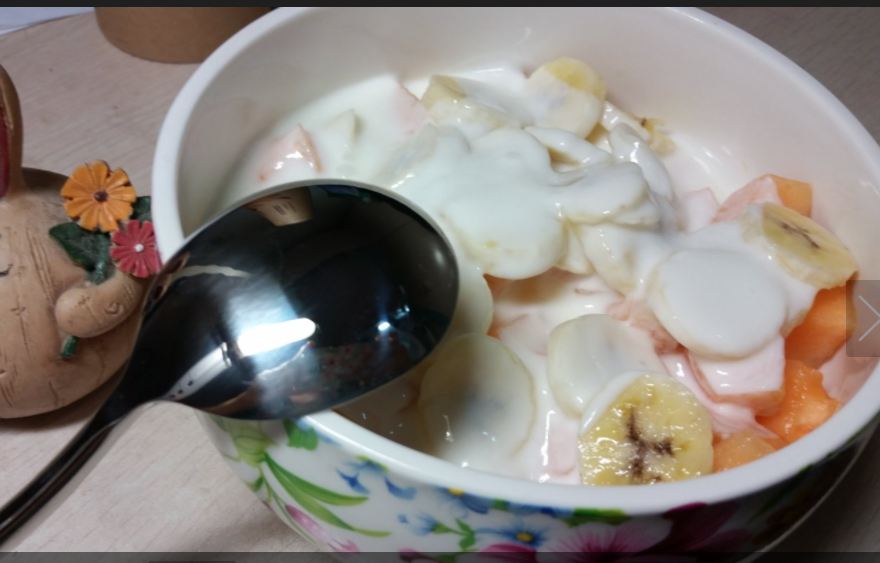

首先这篇文章一定不能随便乱传，因为我不想让我的家人看到担心我，谢谢，每个人的都体质不同，这也只能做个参考哈
好了，开始说说，我确实有天生遗传，腹背熊腰，小时候没有体现，在小学三年级的时候突然开始长胖，然后就一发不可收拾。后来还有了暴食的缺点，到了初中，遇到喜欢的人，决心要减肥了，节食。我那时候不敢吃减肥药，因为那是骗人的，但是每次看见电视购物的广告还是好心动。。。但是没胆没钱 =。=
第一次节食减肥（初二）
我记得，我第一次节食减肥在我初二的时候，记得那时候放假8天，为了个喜欢的小男生，就开始减肥，我是一个以前从来不注重形象的人啊！
- 我每天早上吃3个水饺(当时喜欢吃饺子)
- 然后晚饭其他都不吃，零食肯定是没有滴
结果：8天瘦了14斤，我也没想到怎么会瘦那么快，但是我那时候是136斤，= _ =（要庆幸，我找到了我初中的照片）

初中时的照片，记得那时候就是黑和高原红
从那时候减肥有效果了，就觉得一直这样不吃晚饭肯定回瘦的。。。结果我早餐中午饭都吃，结果反弹了？WTF？反弹了4斤，还好。那时候初三需要考体育，每天都要跑步，而且我那时候几乎天天都打排球，我觉得运动量满够得的，结果，除了满身的蛮力，手臂肉变得结实，小腿用力的时候，看得出来一大块肌肉就没有任何变化。好，第一次失去信心。但是那时候还是不吃晚饭，不过晚饭变成了回家路上鲁卤菜馆的凤爪，每天3支，现在想想。。。那时候为什么没有变瘦，每天吃那么多的脂肪，皮层上的脂肪很多。所以，不要以为吃得少就一定会瘦！
第二次节食减肥（高一）
第二次节食减肥就是高中的时候，高一，理由，还是那个男生，待在家里，5天不吃饭，饿的时候吃油辣椒，但是已经没什么卵用了，因为经过第一次以后的节食，身体已经形成了一种习惯，你正常吃饭就会胖。。。或许那也是传说中的平台期。
反正高中的时候，很讨厌照镜子，高中天天打排球，昆明的紫外线特别强，反正就是像个碳一样，刚开始我妈还不给我擦防晒霜，说我太小，后来可能也是觉得我太黑了，才让我用
O__O “…我放我的照片你们真的不准笑，因为我曾经给我妈看了，她平时很严肃，但是也笑爆了
好了
传说中的照片！！
(✿◡‿◡)
真的
真的
真的
不要笑
请忍住
高一照片比较多，因为wuli喜家的幺妹喜璇璇，最喜欢拍照。。。我挑的都是最丑的。。。
高二没有找到照片
不过有高考完最酷的照片

高一排球赛结束后的聚餐

高一冬天的韩国烤肉

高一冬天的韩国烤肉

其实高一刚开始我体型也不是很胖，就是太黑了
好了，最高潮来了，高三，每天吃多少我已经记不得了，反正看见啥都想吃，但是讨厌所有甜的东西

高考完聚餐
嘻嘻嘻。。。当时体重180斤，酷吧！
第三次减肥(高考完假期)
我妈帮我报名了中医馆的推拿减肥，我觉得应该有效，但是。。。没效，可能因为我的肉很铁，很多肌肉，所以很难减肥，失望到家。。。。但是那时候聚会多，又想着高考完，多吃点。。。
但是我一直都注意，能不吃晚饭就不吃，因为身体已经记住了我不吃晚饭的状态，如果我正常吃晚饭就会胖，并且我是那种，不吃可以不吃，一吃就要撑到死的暴食症患者。。。真的无法无天了
给大家看看高考完假期的照片吧
就问你们见过真正的黑穷丑吗？没错！就是我
假期去香港玩，更是吃了很多

香港的时候，和我当时的男神，裴勇俊蜡像合照

假期快完的聚会
那时候虽然瘦了，也是靠节食，是因为太胖了180斤，高三没控制，身体记录恢复了，所以节食了就瘦了，大概6斤吧，2个月
接着要去上大学了，一家人开车送我去，一路玩一路吃。。。我又变成158斤
那时候没照片。。。我讨厌照相
大学减肥历程
大一
其实一直以来都很自卑，其实我也知道别人觉得我很丑，很胖，没有人会喜欢我，所以谢谢那个在我最丑的时候喜欢我的男生，也是我喜欢了4年的男生。告诉自己，大学一定要改变，因为太多人告诉我，苑苑，你五官很好看，减了肥肯定是美女。
=。 =军训的照片再来一遍吧。。。

其实军训的时候，我吃早餐，然后中午3杯豆浆，晚上3杯豆浆，但是也只瘦了一点，大概是146斤吧
军训完的时候，还是减不下肥，那时候10月份，和姐姐诉苦，她告诉我愿不愿意尝试减肥药（因为大学有了生活费，可以自己支配）她说她同学吃了有效，一个月减了8斤！我马上就激动了，实在没有办法了，就尝试了减肥药，我刚开始都不信，因为我觉得我的体质和别人不太一样，我是肌肉，很难减肥。减肥药到了之后，卖家告诉我，反正常吃，只是多喝水，提高新陈代谢。我就开始吃了，在吃减肥药的时候我每天只吃早餐，早餐就豆浆和几个小饺子，接下来什么都不吃，当属特别虚，宿舍7楼，
我上楼梯都会有些累，反正当时低血糖了。吃药过了一个月，我真的瘦了，额，我不是推销。。。那种减肥药我身边的朋友也吃过，很多的根本没多少效果，瘦了一点又反弹，因为没管住嘴，有的吃了有副作用，就没吃。我当时觉得如果可以受到130，我就满意了，于是，我又买了一副减肥药。但是因为可能身体有抗体还是什么，效果没有以前的好，但是确实到了130斤了
放张照片，嘻嘻(^__^)

假期快完的聚会
后来我又开始正常吃饭，但是当时对热量这些真心没有概念，就觉得少就会瘦。
大一下学期一直都是130-134之间徘徊，一直都是，反正那时候我也不管了，就开始正常饮食，也没有暴饮暴食。

大一下学期照片，那时候大约130左右
大二我又买了次减肥药，没卵用了已经。。。结果又开始节食，确实起了点效果，差不多最瘦是到了126斤。再怎么都减不下去了，但是当时没有试验过运动哈，太懒了。
后来一个学长去薄荷公司工作，就下载了软件，发现有种叫做代餐粉的东西，觉得应该挺好的，用来代替中午饭，晚饭继续不吃。其实代餐粉是有效果的，对于那些正常饮食然后突然使用代餐粉确实有效果，但是我已经是老司机了，几乎没什么效果。
大二下学期的暑假，去做了整容手术，实在是在变美的路上经历太多了，同意了我妈的想法。
做整容手术之前几天的照片

那时候眼睛常常肿，睡不好觉就水肿，脂肪很多，而且医生看了以后，还发现我眼睛睁不大，因为肌肉有问题，说要一起修复
整容把眼睛里面特别多的脂肪拿出来，也做了肌肉，所以我现在虽然眼睛小，但是。。还是可以睁大的。。。嘻嘻，最可惜的是我不能开眼角，因为我黑眼圈很严重，黑色素很重，如果开眼角会造成很明显的疤痕，所以现在会感觉我眼睛有点深，不过也是黑眼圈的原因啦，=_=！
在整容期间瘦了不少，以为要忌嘴，很多东西都不能吃，都只能吃清淡的，并且减肥后一直在做keep，它的什么综合训练我忘了，我每天转半小时-一小时的呼啦圈，然后做keep，先两个4分钟减脂，一个初级，一个中级。后座MIT还是什么的一套的运动，几乎30多分钟，接下来就是拉伸了，其实我觉得拉伸很重要呢….小腿为啥那么多肌肉，就因为以前跑步拉伸做的不够

刚开始整容时的体重

反正还在恢复期间，是多久我真心不记得了

最后的体重，也算最轻的了124斤

整容拆线刚完第二天，还是很肿
假期结束，开学了，学校门口突然建起了健身房，其实在去健身房以前，我和我室友每天跑步40分钟+。跑完步还需要跳绳100次和仰卧起坐50个，嘻嘻那时候过得挺充实，1个多月，体重少了1-2斤，但是不知道体型有没有改变，
下面来说说健身房
- 刚开始20-30分钟热身，跑步
- 后来开始机械训练，将近50分钟
- 最后有氧运动(跑步，动感单车，做keep)都可以
- 最后进行拉伸，需要长时间
当时状态比较好，就特别有信息，不论多累，都坚持
3个月的健身房，体重几乎维持在124左右，没瘦也没胖
剖几张健身照片
刚开始很痛苦，就连热身训练都觉得累，不过那时候有高晓松陪我
健身一段时间将近1个多月吧，但是体重没变，但真心塑性，我的后背很厚，我练了器械，后背减了，还有线了。。。
那时候还在健身中，只不过快结尾了
很想找回那时候的自己，很有斗志，当时还面临着实习工作的压力，并且我大一大二都是做UI设计，要做技术就必须努力。
后来因为找实习工作，课程也多，就停止了健身，但我每天要回宿舍做一个小时的keep，反正就是4分钟从基础到高级，然后在做那种一套的差不多35分钟，因为背厚，所以我还要做驼背训练，训练完需要拉伸。
不说健身体重会不会改变，但是我的形体是真的改变了，很多人都说，但是我那时候的体重还是维持在124-128之间。(平台期，千万不要急，我2年的平台期，我当时也觉得瘦不了了，最后运动改变了体质，大家如果处在平台期可以去尝试运动或者饮食调节，喝牛奶一定喝脱脂的，每天保证一个鸡蛋，反正我不吃蛋黄，需要保证身体的蛋白质，每天吃点水果，保证维生素，切记，不要便秘，因为节食会导致一定的便秘，所以火龙果和香蕉可以治疗)
在健身期间，那时候冬天，不用冰箱，菜就可以放一久。我每个周末去采购蔬菜，小白菜，香菇，白豆腐，金针菇，生菜，每天中午饭都是用清水煮，然后配上单山蘸水(云南很出名的蘸水，无油，大家可以试试，对于喜欢吃辣的真的很好吃)和一些香辣酱，不过酱不多，毕竟有油
那时候晚上其实会饿的特别快，因为中午都是吃菜，晚上回到宿舍饿了的话，就做酸奶蔬果沙拉吃

酸奶蔬果沙拉吃，制作方便，只需要保证酸奶是原味，水果尽量买含糖少的
那时候每天都keep，早上7点半起来撸码，一直到凌晨2点+，就这样我又瘦了，我觉得那时候瘦是因为健身改变了体质，所以我觉得健身是一定有必要的！按理来说我128左右徘徊了2年多，平台期，但是我去健身虽然体重没有改变多少，但是整个身体系统应该是改变了。加之那时候课程紧，还要学习技术，就挺累，坚持了一个学期。体重慢慢下来了，只要体重低于124，我就知道平台期过了，然后继续keep，夏天菜放不久，就去学校门口买煮的冒菜，清汤的，只选菜和鹌鹑蛋，蛋白质有饱腹感，多放醋，我觉得挺好吃。反正西瓜我现在是几乎不碰，据说含糖量很高
自拍有假，其实脸还是要比自拍胖一些
换了个发型，可以遮住大脸，拍照也有角度问题，脸没有辣么小
后来假期回去也不怎吃，去北京找当时的男朋友，都不想出门，就每天吃酸汤白菜（广告时间：酸汤底料是云南比较出名的一种酸汤，很好吃），我当时也没太管体重，但是从脸感觉到是瘦了。体重当时118-122吧，照片我找不到了。
大三下学期一开学就开始找实习，有压力，即使技术人员不看颜值，但是也希望瘦啊，结果，讨死的我又去买了一副减肥药，不过据说那是另一个公司的，虽然贵但是对身体副作用不大，1000块一个月，我的钱也只够买一副。反正每次吃减肥药的时候我都很控制饮食，就算吃也吃蔬菜，不喝奶茶饮料，我自己买了英式水果茶自己喝，放几颗冰糖，挺好喝。反正吃完减肥要确实瘦了，但是我再想到底是减肥药的功效还是我那时候早餐一个鸡蛋蛋白，一杯豆浆。中午想吃就吃蔬菜，不想吃就一天都不吃，反正是瘦到了110.那时候我每天都称体重，如果胖了一点，接下来的几天就控制食量。
假期去阿里淘宝实习
情感上遇到很多事情，加之杭州的东西我实在吃不惯，心情也很差，反正当时就很烦，不想吃饭，但中午还是回去吃，吃的很少，反正不碰米面。一定不碰米面，对于O型血来说，米面是长胖的最大因素，大家可以根据血型去查查该注意什么后来阿里结果不好，留不下，也很心急，因为错过校招一大半时间，没办法，直接飞了北京去人家公司面试。
那时候没有称体重，没心情称了，饿了就随便吃点菜
在北京找实习的时候
小米实习
刚来到北京不知道吃什么，感觉都是米面，所以一般自己做中午饭，炒个手撕包菜，煮根玉米，做个蒸鸡蛋或者凉拌茄子，反正都是自己带中午饭，但是没有米饭。使用粗粮代替主食

12月份MIUI音乐部门圣诞节，我忘了那时候我是多少110吧，只是我的肉都在后背和肚子，所以看着不是特别明显
###好了，重头戏来了
拿到小米正式offer以后心情特别好，也因为前一段感情的问题，3个星期，每天早上喝一杯红糖姜茶（京东可以买），然后饿了就吃大枣（京东有售，和田大枣），其实吃这个是为了不低血糖，不贫血。其中有一天晚上确实特别饿，点了个外卖，是蒜泥虾，不过虾脂肪不多，蛋白质高，好，告诉小朋友那时候瘦了多少，不过我每天都用杠铃做联系

节食4天

节食一个多星期了吧，当时应该是104左右，为了口红试色才照的照片
记得那时候年会后部门BT，吃烤肉，我就吃蔬菜。。。就只吃了一点，我忍住了啊！！！

BT烤肉，全是肉。。。我忍住了！
110 到 93
当时特别喜欢淘宝一条裙子，并且也买了，但是穿着不好看，决心减肥穿上！工作也得到了，该减肥了！
不过后来瘦了也不好看，也许不适合我吧。。。:-(

最后试了感觉还是不好，就再也没穿过了
好啦后面就是减肥照了，其实肚子上还是有很多肉，因为长时间没吃饭，所以扁下去了，如果一吃饭，也会凸起来，所以最近再练keep的腹肌撕裂项目

是饿了很久，其实肚子上还是肉

是饿了很久，其实肚子上还是肉

可以看出来我的骨头已经突出了，但是腹部还是很多肉。。。。

上班的时候
###又经历一下不开心的事情
刚开始觉得活着干嘛约束自己，就想吃什么吃什么，结果，确实长回来了，这就是节食的弊端，反正反弹到104左右。。。。啊，接受不了
但是胸部变大了（我瘦也先瘦胸，胖也先胖胸），肚子也胖了。但是看脸还是看不出来

104-107左右的体重
回到学校后又遇到闹心事，不想下楼吃饭，懒得下楼，叫别人带点水果来每天1-2个苹果，琵琶吃得多，胃不舒服就泡杯豆浆(永和无糖豆浆挺好喝的)

随便拍的，因为我觉得我拍照很奇怪，所以不常常拍照，一般也拍一些搞笑的丑照
5.20 Birthday
嘻嘻嘻，在生日这天决定发自拍正常的
现在体重96，没有年前的时候瘦，但是年前瘦的时候，好多人都觉得我不好看，脸上没肉，现在长气了点肉，正常饮食，晚饭酸奶或者苹果，每天做keep，希望能保持体重！我们都加油！

目前照片，无P图，不过加滤镜了
总结一下瘦脸
很多人问我说，怎么脸瘦了那么多，其实说句实话脸瘦了真心不怎么好看，还是脸上有肉，可可爱爱的女孩子比较好看。
- 我每天晚上都会做拉伸运动：抬高头到极限， 微张下巴，感觉有力拉下巴就对了，然后向左向右拉倒极限，我每天200下
- 第二项，挺气腰板，肩部要朝后压一些，抬头挺胸，转动脖子，200下，这个对颈椎会好点，因为程序员颈椎会有点问题
- 第三项，我是因为脖子后面肌肉多，所以看着脖子短，所以用右手放在左边头下把头从压下来，拉伸左边的后方，相反也是，2-3次即可
- 第四项，用例搬动脑袋，拉伸后颈椎30s-40s即可
- 第五项：抬头低头，200次
- 第六项：在擦完晚霜以后需要让它吸收，就用手从下巴顺着刮到耳朵，在往脖子上刮，这是瘦腮帮的，如果你的是肌肉，那没办法，去打瘦脸针吧，我的一直是肥肉
- 从淘宝买了头套瘦脸，本人觉得没多大效果
这就是为什么我洗脸擦脸需要半个多小时，是因为我在运动的时候等着擦得东西吸收了，运动完一项在继续擦下面一个。
瘦腿
抱歉这个我真的不会，还是上keep看看吧
瘦肚子
我现在正在尝试keep的腹肌撕裂者，要看到效果至少需要2个月，如果有效，我一定告诉大家
总结一下减肥
- 节食减肥要做好今后的日子都会这样的准备，刚开始快，后面碰到平台期，真心一点用都没有
- 节食减肥一定要坚持一个星期，这样你的胃都会小，以后也吃不进那么多东西了
- 一个月我会进行1次的断食，断食一般2天，只喝水，进行身体排毒
- 希望处于平台期的不要焦躁，我也度过，确实很失望，尝试着改变一下减肥方式
- 肥肉减肥，建议运动
- 肌肉减肥，建议先瑜伽，我现在觉得瑜伽真的很好
- 对于减肥药，这个真的看人，我吃了有效果也是因为我不吃饭，有的人吃了一点效果都没有，要问我的直接私信我
- 我做脸部运动已经7-8年了，几乎每天都做，具体效果怎么样，确实不能很快体现，但是颈子真心细了
- 对于像我一样，背上有肉，手臂有肉，建议京东买对哑铃，1kg就好，不然太重了也不好，然后跟着keep做，我在健身房做器械，背真的瘦了，我一直哪里瘦背都不瘦
- 对于跑步，我不知道有没有效果，但是建议在无氧运动之后再做有氧运动，注意拉伸，反正我每次只要跑步，小腿一定会粗，我也拉伸了，可能没达到要求吧。
- 对于血型这个，虽然没科学依据，但是我还是相信了，相信的人可以去查查自己血型注意点什么
- 一旦你节食了，以后只会是深渊，自己考虑清楚，第一次减肥的可以试试薄荷代餐粉(超模)，我没有打广告。。。。
浅谈一下皮肤
- 我以前两颊两边有很多密集的豆豆，有点像鸡皮肤，后来我妈让我用肥皂洗脸，几年之后没有了
- 高原红：最大的原因就是防晒和补水
- 隔离霜：只要一工作，我什么都不擦就直接擦隔离和防晒
- 鸡皮肤：手上，脚上的，我正在使用一款台湾的产品，还不知道有没有效果，有效果了再通知大家。
- 防晒：一定要擦防晒霜，太阳太大就带口罩吧，太阳伞，我这个年龄如果被晒多了以后我感觉皮肤会老化。。。